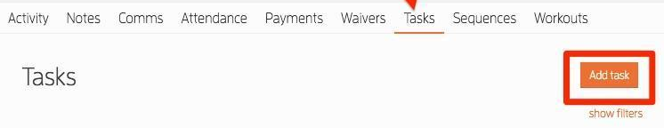
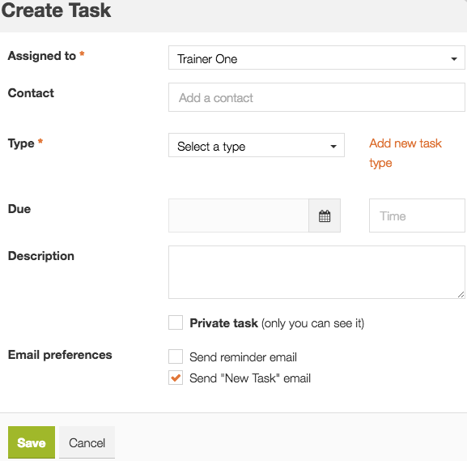
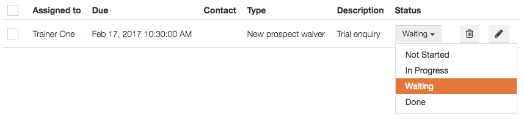

Good follow-up
starts with Tasks.
Create a clear reminder, put it on the right profile, and give the next person everything they need to act.
When to use a task
Create one as soon as a member or prospect needs an action that cannot be finished now, or another staff member needs to take over.
Member & prospect work
Booked calls, missing onboarding items, attendance conversations, rollover checks and member enquiries.
Keep the next step visible
Record who will do what and when. A profile note stores the history; a task makes the next action visible.
Review your tasks each day
- Open Tasks in Clubworx. The original training guide also shows due-task alerts on the Tasks menu and Dashboard.
- Filter Assigned to your user, Status to unfinished work, and Due before/on today. Review overdue items as well as today’s tasks. Clear filters if an expected task is missing.
- Read each task and open the linked member/prospect. Check recent notes, replies, bookings, attendance or payment evidence relevant to the action.
- Act, record the result, or leave a specific next action with an owner and review date. Review anything waiting before the end of your shift.
Do not rely on reminder emails alone. An overdue task needs review; its age does not automatically change who owns it.
Create & assign a task
- Find the correct person first. Match the name and contact details; use the Clubworx contact ID where available. For a Book a Call prospect who is missing, use + Add → Prospect, enter verified booking details, save, and confirm the new profile.
- On the member/prospect profile, select Tasks → Add task. You can also use the main Tasks → Add Task page; explicitly select the correct Contact there. Recheck for an existing task before saving.
- Set Assigned to the person responsible for the next action. Use the ownership guide below. If the correct person cannot be selected, record the assignment issue and ask Mel to resolve access.
- Choose the appropriate existing Type, such as phone call, email or meeting. Use the team’s existing task types. Creating a new type is not required for this procedure.
- Set Due date and time to when the action must happen. For a booked call, use the confirmed appointment time. Use Australia/Brisbane and check the displayed time against the booking.
- Write a specific Description: action and person on the first line, then context, source, verified facts, required outcome and any missing information. Use the templates below. If your screen has no separate title field, the first description line serves as the task heading.
- For a task another staff member needs to see, leave Private task unticked. Check the available New Task and reminder email preferences for the intended assignee before saving. These are staff task notifications.
- Click Save. Reopen the task and verify its contact, assignee, type, description, due date/time and unfinished status. Confirm it appears on the correct profile and in the task list.
See the original training screenshots


Assign it to the right person
| Work | Owner & next action |
|---|---|
| Book a Call | Sales Guy. Due at the booked call time. Include the verified callback number, enquiry, source and Brisbane appointment time. Keep the task and profile notes aligned with any reschedule or cancellation. |
| New member / Kickstarter | Admin/reception for the checks they are doing. Verify sign-up, payment, waiver and profile details. Assign any conversation to the staff member responsible through the existing team process; record unresolved items and the review date. |
| Attendance / rollover | The staff member assigned in the relevant workflow. Check current membership, attendance, Notes and Comms before contact. Red/Orange Flag work follows Head Coach review and messaging ownership. A task does not replace that review. |
| Failed payments | Ram reviews first. If Ram cannot resolve it, explicitly hand over to Jakob. If Jakob cannot resolve it, Jakob escalates to Mel. Keep the tracker, task and profile notes aligned. Amount, age and retry count do not skip a reviewer. |
| Unclear request / access issue | Keep a named current owner while clarifying the required action. Record the question and review date. Ask Mel to resolve unclear routine ownership or missing access; retain the Ram → Jakob → Mel route for failed-payment cases. |
Update without losing the history
- Open the existing task and check the current profile record before acting. Confirm another staff member has not already completed the action.
- Add the latest update above the old notes. Include your initials and date; use ---- to separate it from the previous entry. Preserve the original request and earlier updates.
- Record what actually happened: spoke to member, no answer, voicemail left, reply received, awaiting approval, or check completed. A prepared draft is not a sent message.
- Use In Progress while actively working, or Waiting when a member reply, manager decision or external result is needed. Record exactly what you are waiting for, the owner and a follow-up date.
- If the next action or appointment changes, update the due date/time, assignee and related booking/tracker as needed. Preserve the original timing and reason in the history. Save and verify.
RT · [DD/MM/YYYY, time Brisbane] Checked: [verified facts / records reviewed] Outcome: [what actually happened] Next: [specific action] · Owner: [name] · Review: [date/time] ---- [Keep the original request and earlier dated notes here]
See the original status menu

Complete the action, record what remains
Choose Done only after the task’s action or final disposition has been recorded. Add the actual completion date, staff initials, result and any supporting profile note.
A call task can be done
Sales Guy has made the call and logged the result. If there is no answer or further work is needed, save a dated follow-up before closing that attempt. Do not record the prospect as converted without a confirmed outcome.
A case may still be open
An SMS sent, form completed or review performed can finish that task action. Keep the failed-payment case open until its outcome is verified, with another task or clear next review where needed.
Start with a useful task template
Choose the situation, copy the description, and replace every bracketed field with verified details in Clubworx.
This is a guide only. Copying a template does not create, assign or send anything in Clubworx. No member information is stored on this page.
Before you leave the task
Use this for the task you are reviewing now. Checks reset when you reload the page.
Add this to a Guides page
In Google Sites, choose Insert → Embed → By URL and paste this link. Use a full-width block and allow enough height for the guide to scroll comfortably.
https://urbanmuaythai.github.io/Guides/clubworx-how-to/?embed=1#tasks
HTML embed code
<iframe src="https://urbanmuaythai.github.io/Guides/clubworx-how-to/?embed=1#tasks" title="Clubworx How To — Tasks" width="100%" height="1000" style="border:0;border-radius:12px" loading="lazy"></iframe>